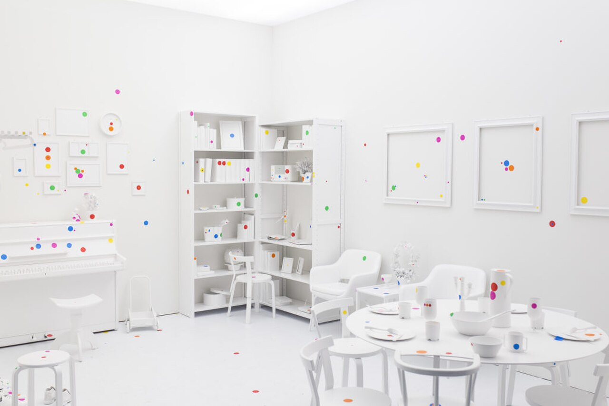
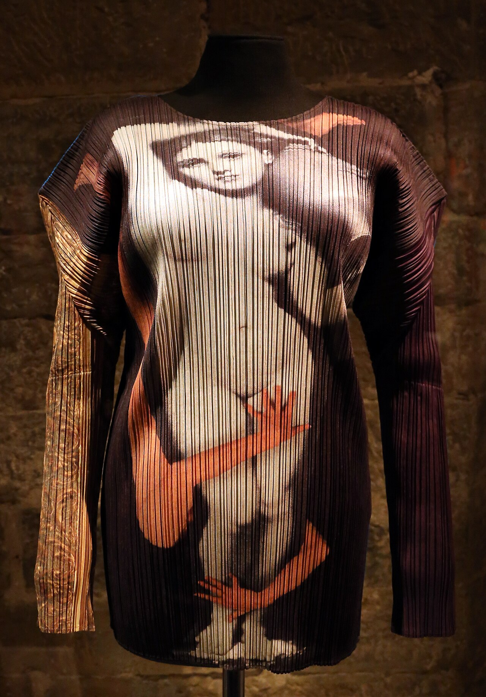
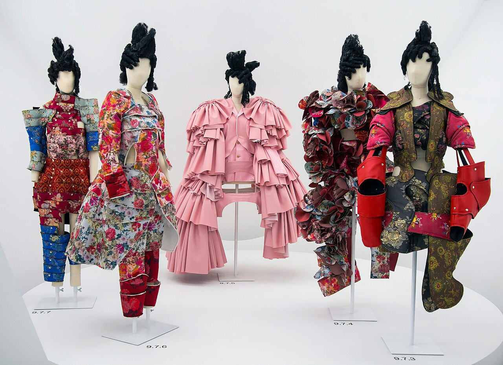
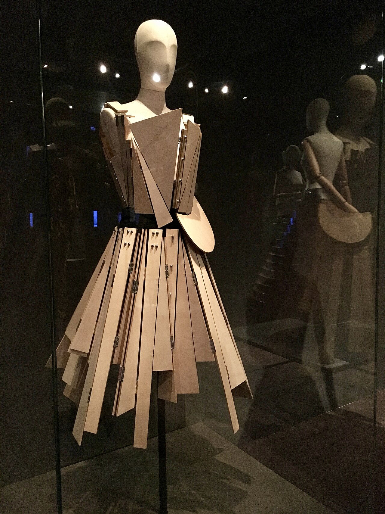
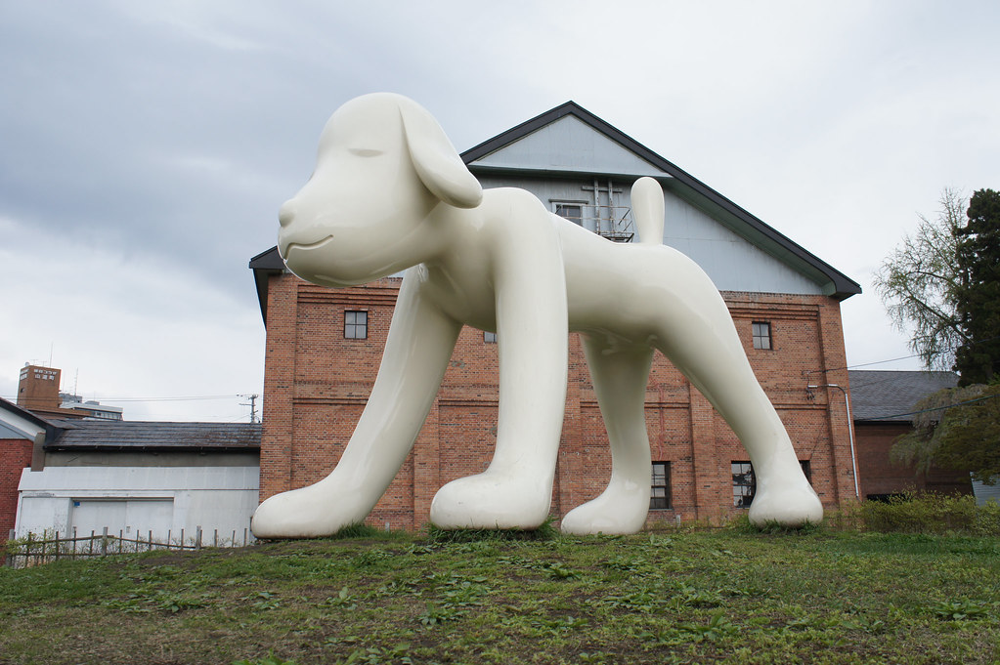
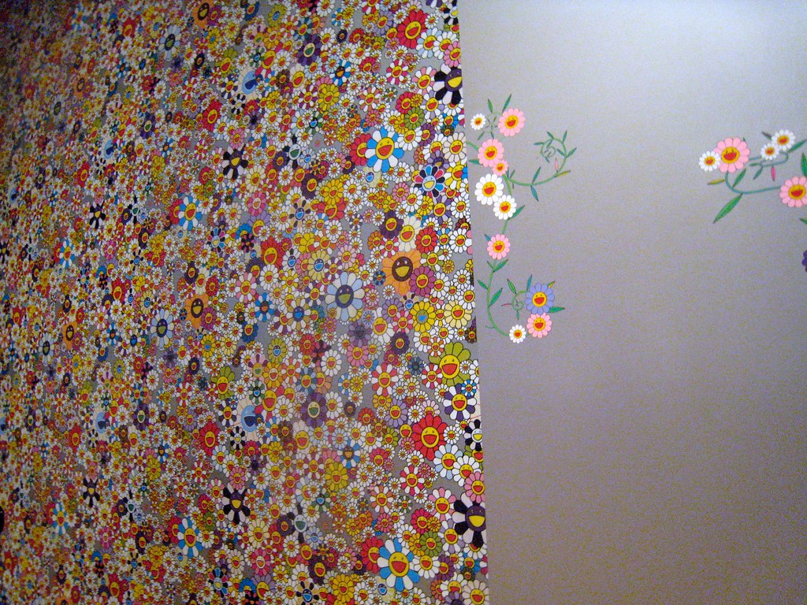

Lesson 07 / 17 min / Synthesis
Six Artists, One Country
The three arguments, the trip route, and the final quiz.






The three arguments
1. The post-war generation
Kusama, Miyake, Kawakubo, and Yamamoto were born between 1929 and 1943. Their childhoods were shaped by the war, the bombing, the occupation, and the reconstruction. The avant-garde they made is not a rejection of Japan; it is a rejection of the old Japanese order — the family, the craft hierarchy, the idea that a woman’s body should be dressed for display. When Kusama paints nets in New York, when Miyake pleats a garment, when Kawakubo pads a hip, when Yamamoto drops a shoulder, they are all arguing with the same inherited body.
2. The 1981 Paris shock
Kawakubo and Yamamoto debuted in Paris in the same season. Miyake had been showing there since 1973. The French press turned the coincidence into a category — “Japanese fashion” — and the category stuck. The clothes were black, oversized, asymmetric, and apparently unfinished. They did not flatter the body; they reorganized it. That moment is the hinge between the post-war generation and the global fashion system.
3. The 1990s–2000s pop and market
Nara and Murakami were born in 1959 and 1962, into the high-growth Japan of television, anime, and consumer culture. Their work is not about the war; it is about the aftermath of the miracle — the otaku, the cute, the global museum, the auction record. Superflat is the theory that connects Edo painting to anime; the market is the machine that turns the theory into a brand. The 2011 disaster is the moment both artists’ work turns darker and more inward.
How the arguments connect
The first generation made “Japan” legible to the Western avant-garde. The second generation made it a market category. That is the through-line: Japan is not one thing; it is a series of answers to the question “what is Japanese about this?” Kusama’s answer is a pattern. Miyake’s is a piece of cloth. Kawakubo’s is a body that refuses its outline. Yamamoto’s is a silhouette with room in it. Nara’s is a child with a knife. Murakami’s is a flat surface with a smile on it.
None of them is more “Japanese” than the others. The useful move is to stop looking for the essence and start looking at the arguments they are having with their materials, their markets, and each other.
The route
If you have ten days, do the five-stop route in the “Where to see them” reference. If you have one day in Tokyo, do this:
Aomori, Matsumoto, and Naoshima are separate trips. Do not try to do all three in one day; the travel is the point.
What to read or watch next
If you liked Kusama
Infinity Net (2002), her autobiography; Kusama: Infinity (2018).
If you liked Miyake
The Work of Miyake Issey (2016 exhibition catalogue); the Met’s essay on Japanese fashion.
If you liked Kawakubo
Rei Kawakubo/Comme des Garçons: Art of the In-Between (2017).
If you liked Yamamoto
Notebook on Cities and Clothes (1989); My Dear Bomb (2011).
If you liked Nara
Nobody’s Fool (Asia Society, 2010); the online catalogue raisonné.
If you liked Murakami
Superflat (2000); ©Murakami (Brooklyn Museum, 2008).
For the fashion system as a whole: Yuniya Kawamura, The Japanese Revolution in Paris Fashion (2004). It is academic, but it is the best account of how the 1981 moment became a category.
Final quiz
0 of 0 correct so farSix questions, one per artist, in a deliberately mixed order. This is retrieval practice: answer before you scroll back.
1. Which term describes the dissolution of the self into repetition?
2. What does A-POC stand for?
3. Which 1997 collection is known as “lumps and bumps”?
4. Which filmmaker made Notebook on Cities and Clothes?
5. Which animal is Nara’s 8.5 m Aomori sculpture?
6. What does Superflat describe?
The one book to take
If you read one thing after this course, make it Yuniya Kawamura’s The Japanese Revolution in Paris Fashion. It explains how the 1981 moment became a category, and it will make the fashion lessons feel like history rather than taste.
One thing to remember: Japan is not one thing; the six are six different answers to the same question.